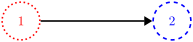

Graph Properties / Features
Let's look at features that graphs or digraphs have before viewing some special types of graphs.
- In a directed edge $(v_1, v_2)$:
- The node $v_1$ is called the initial vertex (or source vertex), and
- The node $v_2$ is called the terminal vertex (or destination vertex).

The directed edge is $(\color{red}{1},\color{blue}{2})$. Vertex $\color{red} 1$ is the initial vertex, and vertex $\color{blue} 2$ is the terminal vertex. Miriam Briskman, CC BY-NC 4.0.
\documentclass[border=1pt]{standalone} \usepackage{tikz} \usetikzlibrary{arrows.meta} \tikzset{ vertex/.style={draw, circle, very thick, minimum size=1cm}, edge/.style={very thick, -Triangle} } \begin{document} \begin{tikzpicture} \node[vertex, dotted, red] (v1) at (0,0) {1}; \node[vertex, dashed, blue] (v2) at (4,0) {2}; \draw[edge] (v1) -- (v2); \end{tikzpicture} \end{document}
 These notes by Miriam Briskman are licensed under CC BY-NC 4.0 and based on sources.
These notes by Miriam Briskman are licensed under CC BY-NC 4.0 and based on sources.